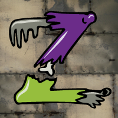

| Home | Zombie Hunters | About Lazarus | Zombie Journal | For the Nerds | Events | Contact Us |
|---|
Welcome to Lazarus

The zombie epidemic may soon be upon us. However we at Lazarus are staying one step ahead of this virus. With the help of a super computer and a zombie virus algorithm, we can simulate the spread of the virus in dense populations. Learn about our team and follow us as we build our supercomputer to defeat this zombie epidemic.
Tweets by @LAZARUS_ttu
Click here to return to TTU STEM Center for Outreach, Research & Education website.
Click here to return to TTU Department of Mathematics & Statistics.